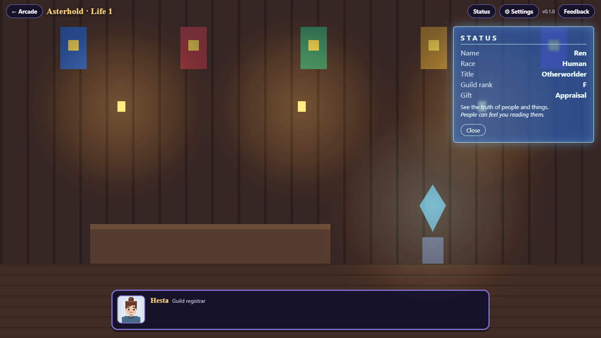

Begin in the Between
Follow the narrator into the Between. Choose Asterhold, the currently playable world, then read each gift’s description and stated cost. Hearthmere and the Ashen Throne are shown as future worlds, not playable routes yet.
Give yourself a name and choose your appearance. Your first life begins outside Lanthorn, where the people you meet and the responses you choose shape the story.

A gift changes the choices you see
| Gift | Its description | Its stated cost |
|---|---|---|
| Appraisal | See the truth of people and things. | People can feel themselves being read. |
| Pocket Space | Carry things in a weightless space. | People may want you to carry their load. |
| Sword Saint’s Instinct | A master’s fighting instinct from your first day. | Holding back once a fight begins is difficult. |
These are the story’s descriptions. The current game expresses gifts through its scenes and available responses; it is not yet a free-moving action RPG with an inventory or combat controls. Read a response in context rather than assuming the strongest-sounding gift guarantees a good ending.
Read, choose, and take your time
Click or tap to continue speaking. Space and Enter advance dialogue; while text is still appearing, a press reveals the line first. Select a response with its button. Number keys select numbered choices; Enter selects the first available response, so take care when you reach a decision.
There is no real-time countdown behind Lanthorn’s warnings about the approaching beast tide. This chapter progresses when you continue scenes and make choices. After Hesta’s registration, the Status button opens your character’s in-world record.
- Read what Mira and the other people need, rather than treating each conversation as a reward menu.
- Available responses can depend on your gift, what happened earlier and remembered knowledge.
- The browser saves your life as you progress. Returning to the same browser can resume it; clearing browser data can remove it.
An ending is also something you learn
Asterhold has eight endings. They are not all victories, and a difficult ending can still teach you something to carry forward. When a life ends, you return to the Between with its record; another life can begin with remembered knowledge.
How returning memories work (light spoilers)
Some endings leave memories that affect later scenes and responses. They are recorded knowledge, not a blanket stat upgrade or permission to skip every obstacle. You can choose a new gift and identity for the next life. The current chapter does not include the other two worlds or an endless progression system.
A guide should help you understand the choices, not replace them. Try a first life without an ending walkthrough, then decide what you want to do differently.